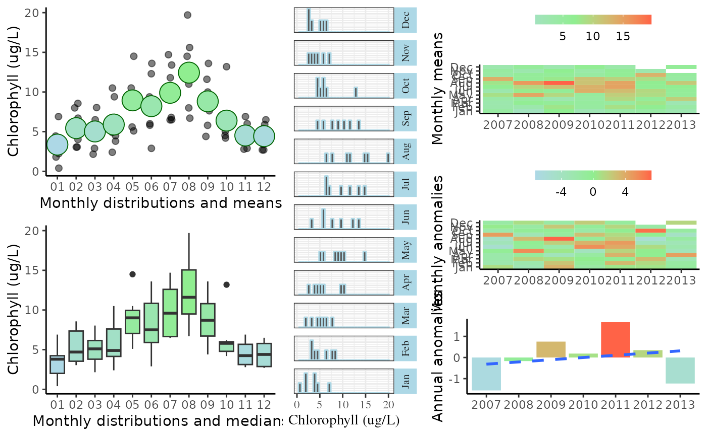
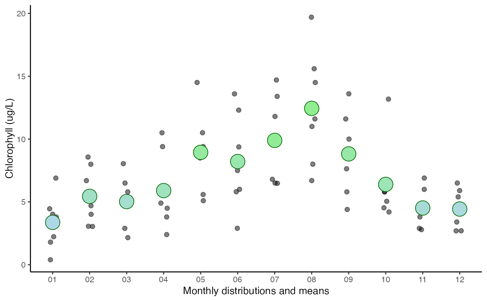
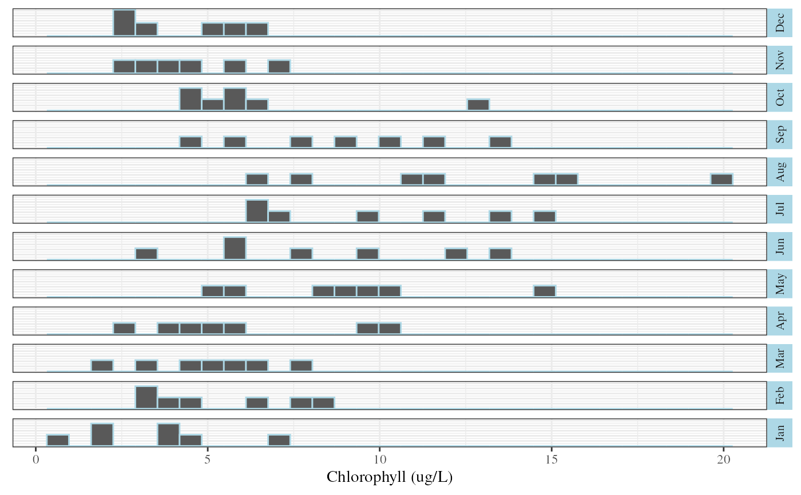
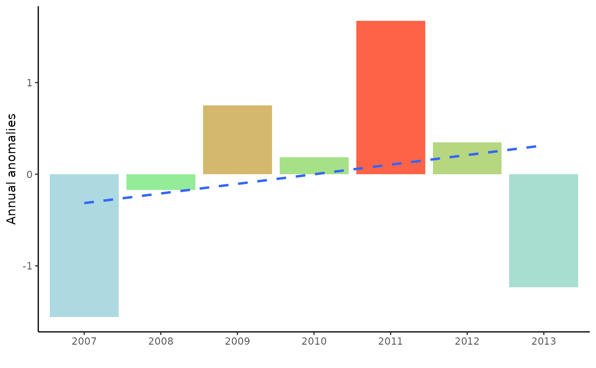

Plot graphical summaries of SWMP data for individual parameters, including seasonal/annual trends and anomalies
Usage
plot_summary(swmpr_in, ...)
# S3 method for class 'swmpr'
plot_summary(
swmpr_in,
param,
colsleft = c("lightblue", "lightgreen"),
colsmid = "lightblue",
colsright = c("lightblue", "lightgreen", "tomato1"),
base_size = 11,
years = NULL,
plt_sep = FALSE,
sum_out = FALSE,
fill = c("none", "monoclim", "interp"),
...
)Arguments
- swmpr_in
input swmpr object
- ...
additional arguments passed to other methods
- param
chr string of variable to plot
- colsleft
chr string vector of length two indicating colors for left plots
- colsmid
chr string vector of length one indicating colors for middle plots
- colsright
chr string vector of length three indicating colors for right plots
- base_size
numeric for text size
- years
numeric vector of starting and ending years to plot, default all
- plt_sep
logical if a list is returned with separate plot elements
- sum_out
logical if summary data for the plots is returned
- fill
chr string indicating if missing monthly values are left as is (
'none', default), replaced by long term monthly averages ('monoclim'), or linearly interpolated usingna.approx
Value
A graphics object (Grob) of multiple ggplot objects, otherwise a list of individual ggplot objects if plt_sep = TRUE or a list with data frames of the summarized data if sum_out = TRUE.
Details
This function creates several graphics showing seasonal and annual trends for a given swmp parameter. Plots include monthly distributions, monthly anomalies, and annual anomalies in multiple formats. Anomalies are defined as the difference between the monthly or annual average from the grand mean. Monthly anomalies are in relation to the grand mean for the same month across all years. All data are aggregated for quicker plotting. Nutrient data are based on monthly averages, wheras weather and water quality data are based on daily averages. Cumulative precipitation data are based on the daily maximum.
Individual plots can be obtained if plt_sep = TRUE. Individual plots for elements one through six in the list correspond to those from top left to bottom right in the combined plot.
Summary data for the plots can be obtained if sum_out = TRUE. This returns a list with three data frames with names sum_mo, sum_moyr, and sum_mo. The data frames match the plots as follows: sum_mo for the top left, bottom left, and center plots, sum_moyr for the top right and middle right plots, and sum_yr for the bottom right plot.
Missing values can be filled using the long-term average across years for each month (fill = 'monoclim') or as a linear interpolation between missing values using na.approx (fill = 'interp'). The monthly average works well for long gaps, but may not be an accurate representation of long-term trends, i.e., real averages may differ early vs late in the time series if a trend exists. The linear interpolation option is preferred for small gaps.
Examples
## import data
data(apacpnut)
dat <- qaqc(apacpnut)
## plot
plot_summary(dat, param = 'chla_n', years = c(2007, 2013))
#> `geom_smooth()` using formula = 'y ~ x'

## get individaul plots
plots <- plot_summary(dat, param = 'chla_n', years = c(2007, 2013), plt_sep = TRUE)
plots[[1]] # top left

plots[[3]] # middle

plots[[6]] # bottom right
#> `geom_smooth()` using formula = 'y ~ x'
#> Warning: The following aesthetics were dropped during statistical transformation: fill.
#> ℹ This can happen when ggplot fails to infer the correct grouping structure in
#> the data.
#> ℹ Did you forget to specify a `group` aesthetic or to convert a numerical
#> variable into a factor?

## get summary data
plot_summary(dat, param = 'chla_n', year = c(2007, 2013), sum_out = TRUE)
#> $sum_mo
#> month min firstq med mean thirdq max NA.s var
#> 1 Jan 0.400000 2.015000 3.800000 3.371429 4.235 6.900000 0 4.470014
#> 2 Feb 3.050000 3.543333 4.700000 5.443333 7.350 8.566667 0 5.304330
#> 3 Mar 2.156667 3.800000 5.100000 5.028095 6.150 8.040000 0 4.120103
#> 4 Apr 2.400000 4.150000 4.900000 5.901429 7.605 10.500000 0 8.839681
#> 5 May 5.100000 7.045000 9.013333 8.943333 9.950 14.500000 0 9.954300
#> 6 Jun 2.900000 5.905000 7.500000 8.212857 10.840 13.600000 0 14.415557
#> 7 Jul 6.480000 6.650000 9.600000 9.897143 12.600 14.700000 0 11.976057
#> 8 Aug 6.700000 9.500000 11.600000 12.442857 15.050 19.700000 0 20.396190
#> 9 Sep 4.400000 6.716667 8.710000 8.820476 10.800 13.600000 0 10.341046
#> 10 Oct 4.200000 4.791667 5.800000 6.395238 6.000 13.183333 0 9.486733
#> 11 Nov 2.795000 3.125000 4.250000 4.515833 5.675 6.900000 0 2.801104
#> 12 Dec 2.700000 2.875000 4.400000 4.433333 5.775 6.500000 0 2.886667
#>
#> $sum_moyr
#> month year mean trend anom
#> 1 Jan 2007 4.450000 3.371429 1.07857143
#> 2 Feb 2007 3.050000 5.443333 -2.39333333
#> 3 Mar 2007 2.900000 5.028095 -2.12809524
#> 4 Apr 2007 3.800000 5.901429 -2.10142857
#> 5 May 2007 8.500000 8.943333 -0.44333333
#> 6 Jun 2007 2.900000 8.212857 -5.31285714
#> 7 Jul 2007 6.500000 9.897143 -3.39714286
#> 8 Aug 2007 8.000000 12.442857 -4.44285714
#> 9 Sep 2007 13.600000 8.820476 4.77952381
#> 10 Oct 2007 4.200000 6.395238 -2.19523810
#> 11 Nov 2007 4.700000 4.515833 0.18416667
#> 12 Dec 2007 2.700000 4.433333 -1.73333333
#> 13 Jan 2008 0.400000 3.371429 -2.97142857
#> 14 Feb 2008 3.066667 5.443333 -2.37666667
#> 15 Mar 2008 6.500000 5.028095 1.47190476
#> 16 Apr 2008 4.900000 5.901429 -1.00142857
#> 17 May 2008 14.500000 8.943333 5.55666667
#> 18 Jun 2008 7.500000 8.212857 -0.71285714
#> 19 Jul 2008 9.600000 9.897143 -0.29714286
#> 20 Aug 2008 15.600000 12.442857 3.15714286
#> 21 Sep 2008 5.800000 8.820476 -3.02047619
#> 22 Oct 2008 5.800000 6.395238 -0.59523810
#> 23 Nov 2008 2.900000 4.515833 -1.61583333
#> 24 Dec 2008 5.400000 4.433333 0.96666667
#> 25 Jan 2009 6.900000 3.371429 3.52857143
#> 26 Feb 2009 8.000000 5.443333 2.55666667
#> 27 Mar 2009 5.800000 5.028095 0.77190476
#> 28 Apr 2009 2.400000 5.901429 -3.50142857
#> 29 May 2009 9.400000 8.943333 0.45666667
#> 30 Jun 2009 6.000000 8.212857 -2.21285714
#> 31 Jul 2009 11.800000 9.897143 1.90285714
#> 32 Aug 2009 19.700000 12.442857 7.25714286
#> 33 Sep 2009 7.633333 8.820476 -1.18714286
#> 34 Oct 2009 5.800000 6.395238 -0.59523810
#> 35 Nov 2009 6.900000 4.515833 2.38416667
#> 36 Dec 2009 2.700000 4.433333 -1.73333333
#> 37 Jan 2010 1.800000 3.371429 -1.57142857
#> 38 Feb 2010 4.700000 5.443333 -0.74333333
#> 39 Mar 2010 5.100000 5.028095 0.07190476
#> 40 Apr 2010 4.500000 5.901429 -1.40142857
#> 41 May 2010 5.100000 8.943333 -3.84333333
#> 42 Jun 2010 13.600000 8.212857 5.38714286
#> 43 Jul 2010 13.400000 9.897143 3.50285714
#> 44 Aug 2010 11.600000 12.442857 -0.84285714
#> 45 Sep 2010 11.600000 8.820476 2.77952381
#> 46 Oct 2010 4.533333 6.395238 -1.86190476
#> 47 Nov 2010 3.800000 4.515833 -0.71583333
#> 48 Dec 2010 6.500000 4.433333 2.06666667
#> 49 Jan 2011 3.800000 3.371429 0.42857143
#> 50 Feb 2011 8.566667 5.443333 3.12333333
#> 51 Mar 2011 4.700000 5.028095 -0.32809524
#> 52 Apr 2011 9.400000 5.901429 3.49857143
#> 53 May 2011 10.500000 8.943333 1.55666667
#> 54 Jun 2011 12.300000 8.212857 4.08714286
#> 55 Jul 2011 14.700000 9.897143 4.80285714
#> 56 Aug 2011 14.500000 12.442857 2.05714286
#> 57 Sep 2011 10.000000 8.820476 1.17952381
#> 58 Oct 2011 6.200000 6.395238 -0.19523810
#> 59 Nov 2011 6.000000 4.515833 1.48416667
#> 60 Dec 2011 3.400000 4.433333 -1.03333333
#> 61 Jan 2012 4.020000 3.371429 0.64857143
#> 62 Feb 2012 6.700000 5.443333 1.25666667
#> 63 Mar 2012 8.040000 5.028095 3.01190476
#> 64 Apr 2012 5.810000 5.901429 -0.09142857
#> 65 May 2012 9.013333 8.943333 0.07000000
#> 66 Jun 2012 9.380000 8.212857 1.16714286
#> 67 Jul 2012 6.480000 9.897143 -3.41714286
#> 68 Aug 2012 6.700000 12.442857 -5.74285714
#> 69 Sep 2012 8.710000 8.820476 -0.11047619
#> 70 Oct 2012 13.183333 6.395238 6.78809524
#> 71 Nov 2012 2.795000 4.515833 -1.72083333
#> 72 Jan 2013 2.230000 3.371429 -1.14142857
#> 73 Feb 2013 4.020000 5.443333 -1.42333333
#> 74 Mar 2013 2.156667 5.028095 -2.87142857
#> 75 Apr 2013 10.500000 5.901429 4.59857143
#> 76 May 2013 5.590000 8.943333 -3.35333333
#> 77 Jun 2013 5.810000 8.212857 -2.40285714
#> 78 Jul 2013 6.800000 9.897143 -3.09714286
#> 79 Aug 2013 11.000000 12.442857 -1.44285714
#> 80 Sep 2013 4.400000 8.820476 -4.42047619
#> 81 Oct 2013 5.050000 6.395238 -1.34523810
#> 82 Dec 2013 5.900000 4.433333 1.46666667
#>
#> $sum_yr
#> year mean anom
#> 1 2007 5.441667 -1.5583983
#> 2 2008 6.830556 -0.1695094
#> 3 2009 7.752778 0.7527128
#> 4 2010 7.186111 0.1860462
#> 5 2011 8.672222 1.6721573
#> 6 2012 7.348333 0.3482684
#> 7 2013 5.768788 -1.2312771
#>